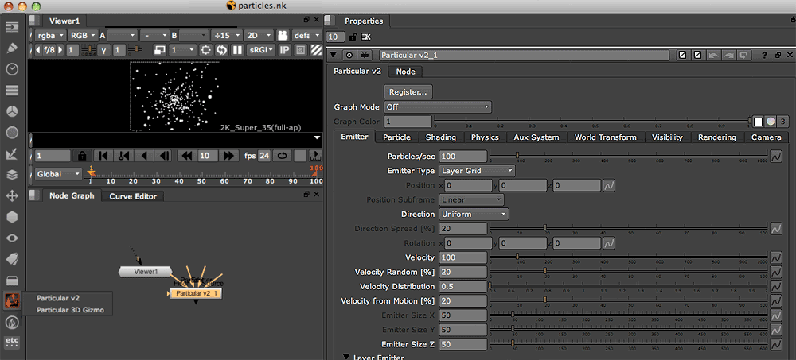

Overview of Particular Interface
Trapcode Particular is a powerful fast and powerful 3D particle system that creates a wide range of effects – from natural smoke and explosions to geometric, 3D or organic abstract elements.
To apply Particular, go to the Trapcode toolbar and select the Particular v2 plug-in or Particular 3D Gizmo. Particular will open in the Node
Graph and Properties panes. If you have selected the Gizmo, a basic 3D scene will also open. Read more about the 3D Gizmo.

The Property tabs
This page gives an overview of the Particular tabs that open in the Properties pane.
- Emitter tab generates the particles. These controls include the shape of the emitter, its initial direction, the velocity of the particles, and moving and rotating the Emitter.
- Particle tab controls the properties of particles, such as size, opacity and color. This tab also sets how the properties vary over the particles' lifespan.
- The Particle tab has an important pop-up called Particle Type which sets the base shape of the particles. The Particle's Streaklet group controls an interesting Particle Type which is a long exposure, light painting effect.
- Shading tab gives the particle scene some special effects shading. This includes its Shadowlet Setting group, which creates a shadow off the main light for soft, self-shadowing.
- Physics tab defines how the particles obey certain real world physical rules once they are omitted. Here are properties such as gravity and turbulence, and controls for making particles bounce on other images in the composition.
- Aux System tab has a particle system within the particle system. Cool, huh? Aux particles are emitted from the particles in the main system. They can be emitted continuously or when the particles collide with Bounce nodes.
- World Transform tab lets you move around and rotate the whole particle system independently of the Camera.
- Visibility tab gives control over where particles are visible. For example, particles far away can be set to fade out. This tab also has Obscuration settings so that images in the composition can be used to obscure particles.
- Rendering tab controls how the particles look when they render. The Motion Blur feature gives fast-moving particles a smooth look, like a real camera does.
- Camera tab contains the Particular properties that mimic a 3D camera, including Depth of Field.